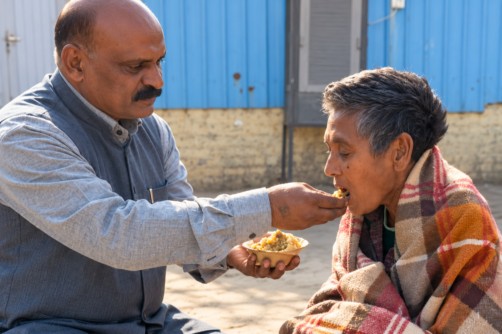
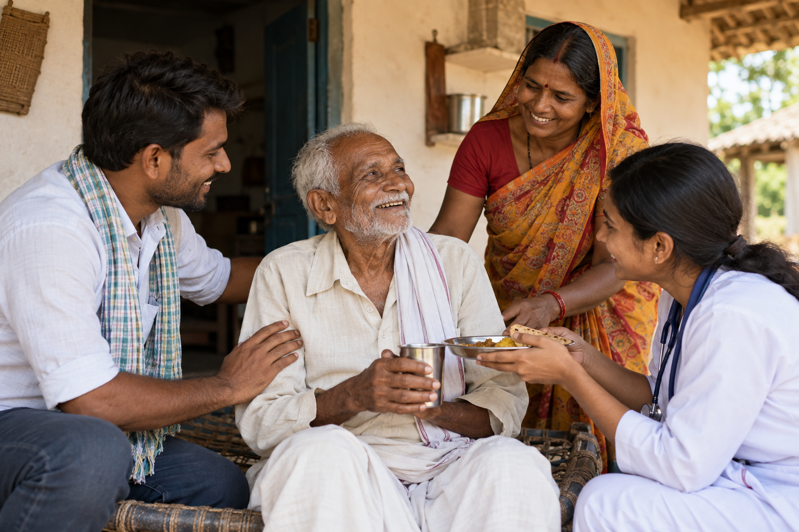
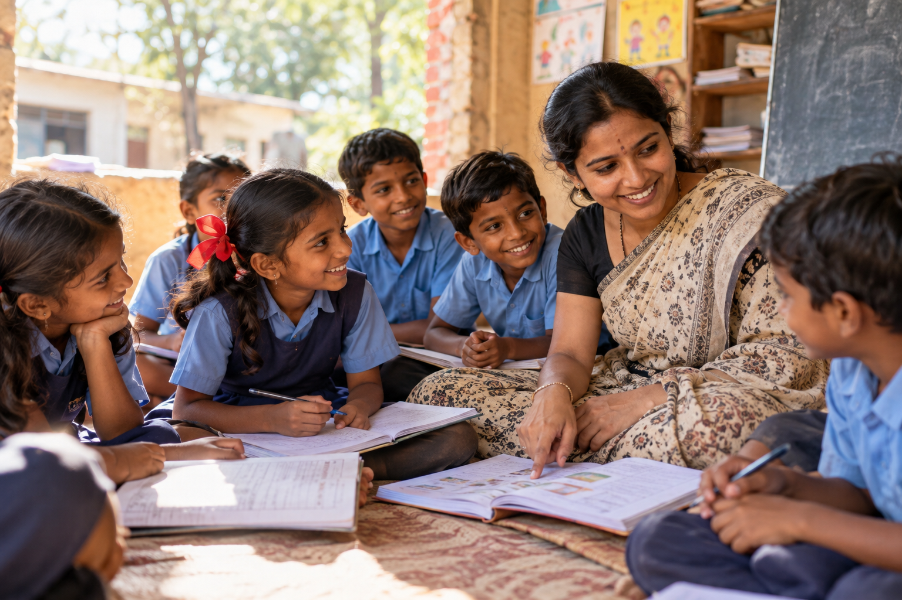
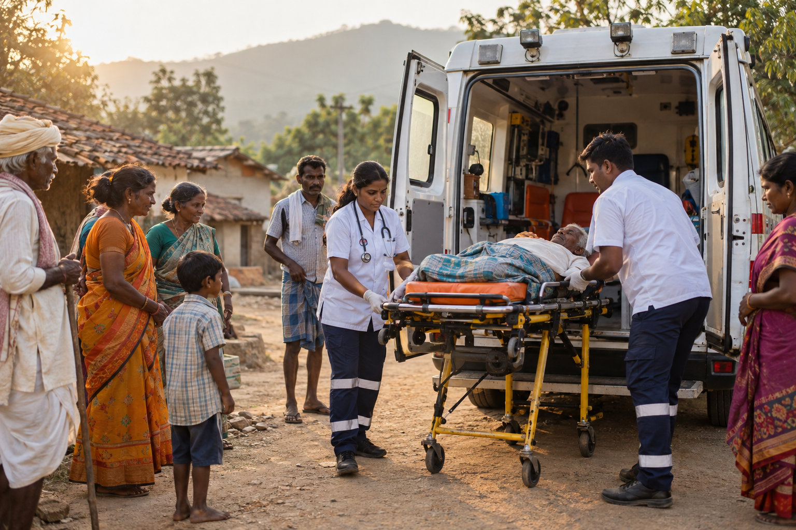
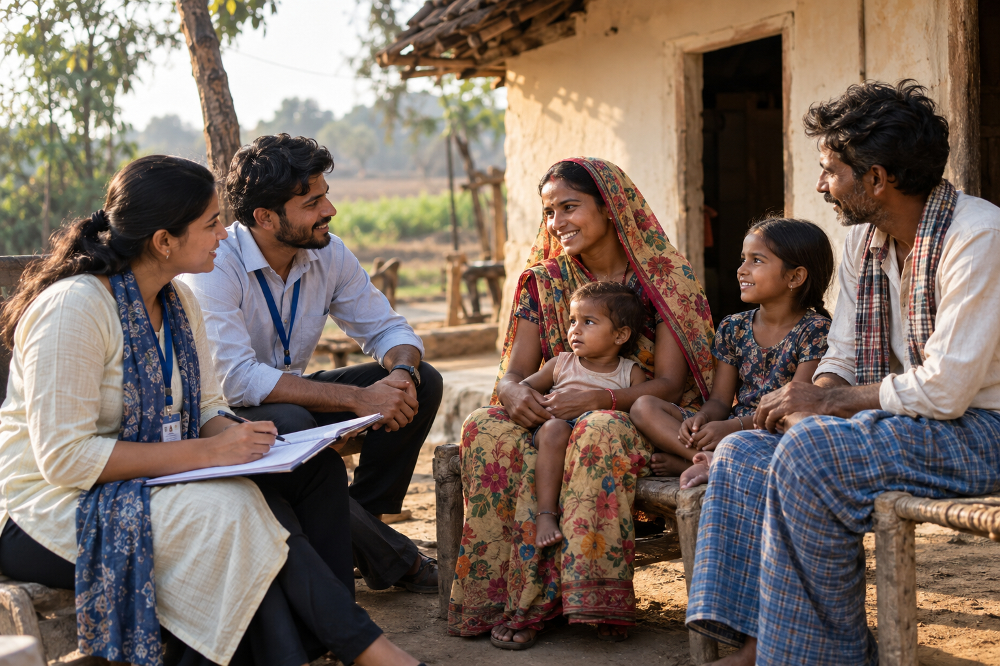

Work On Ground
Real People. Real Change.
From nutritious meals and healthcare support to education, elderly care, ambulance services and community outreach, we work every day to bring dignity and hope to those who need it most.

Meal Distribution 
Healthcare Support 
Elderly Care 
Education Support 
Ambulance Service 
Community Outreach